EE5011: Computer Methods in Electrical Engineering
Polynomial Interpolation (Week 1)
Rohan Rao, EE14B118
1 Programming Assignment
1.1 4th Order Interpolation on sin(x + x2) with a table of 5 points
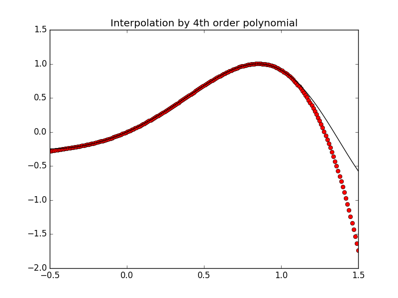
This figure shows the actual points obtained on applying the polynomial interpolation at all xx = linspace(-0.5,1.5,200).
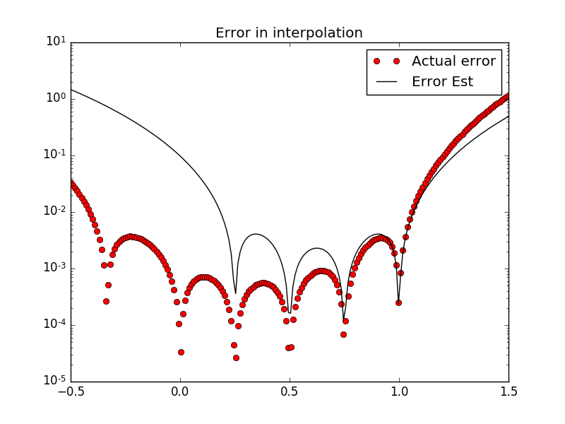
This figure shows that the error is lowest at the five points in the table (xarr,yarr) and grows rapidly outside the boundary of (0,1). In general, the estimated error is greater than the actual error (pessimistic error estimate, as required).
1.2 4th Order Interpolation on sin(x + x2) with a table of 30 points
When doing 4th order interpolation with 30 data points, the evaluation of the function at any point in the array xx will require finding the 5 nearest points from the table for which to apply polint. This can be obtained using a general binary search technique to find the set of 5 points in O(log2N) time, where N is the total number of data points (30).
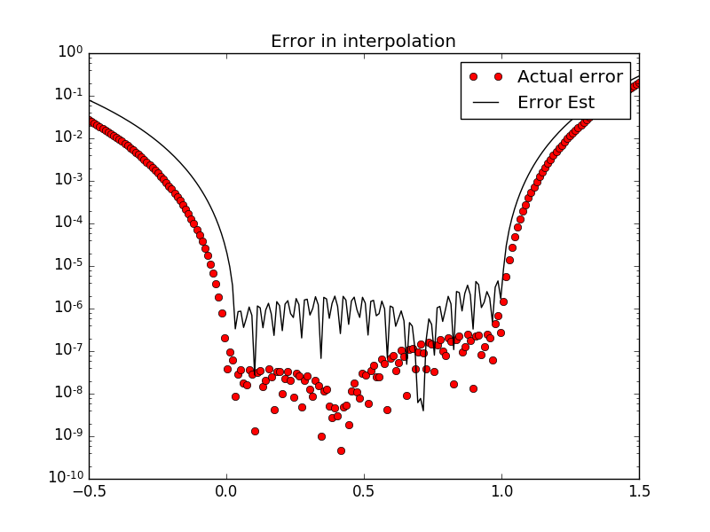
The error has dropped considerably, by 3-4 orders of magnitude, both the actual error and the estimated error. Once again, in general the estimated error is larger than the actual error, which is as desired.
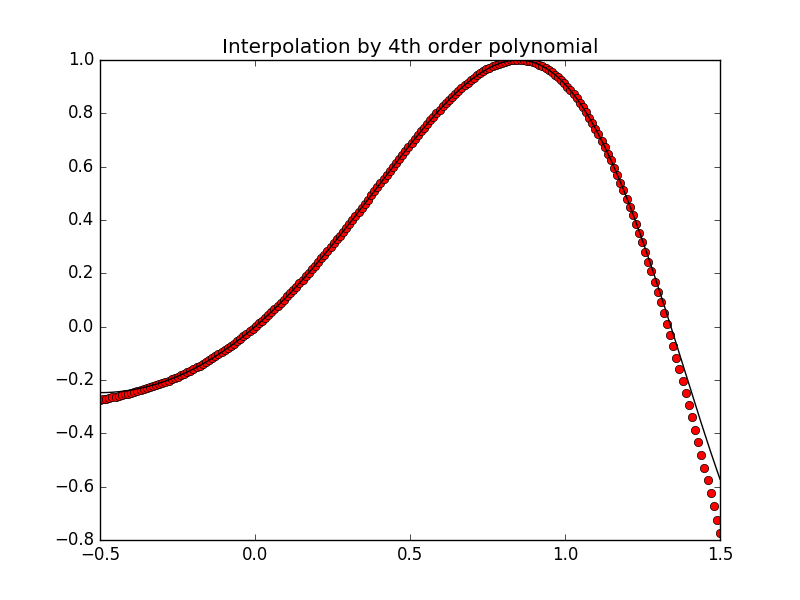
The fitted curve also shows a better fit to the data as compared to the previous case.
1.3 Varied orders of interpolation
As the order of the polynomial is increased, initially the error decreases, but beyond some order, the error on the interval (0,1) drops to the machine epsilon value. This value can be obtained in iPython using print(np.finfo(float).eps) to obtain the result: 2.22044604925e − 16. The values of the function beyond the interval (0,1) - extrapolation - varies wildly for larger order polynomials, and cannot be expected to be correct. This shows that lower order interpolations are generally better for fitting data, and overfitting with higher order polynomials will cause the function to overreact to minor fluctuations in the data samples.
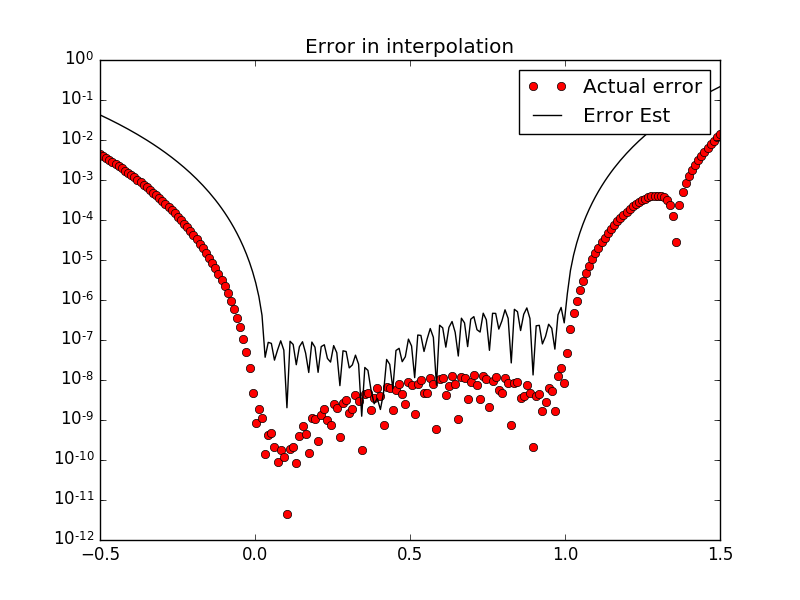
Order of polint = 5.
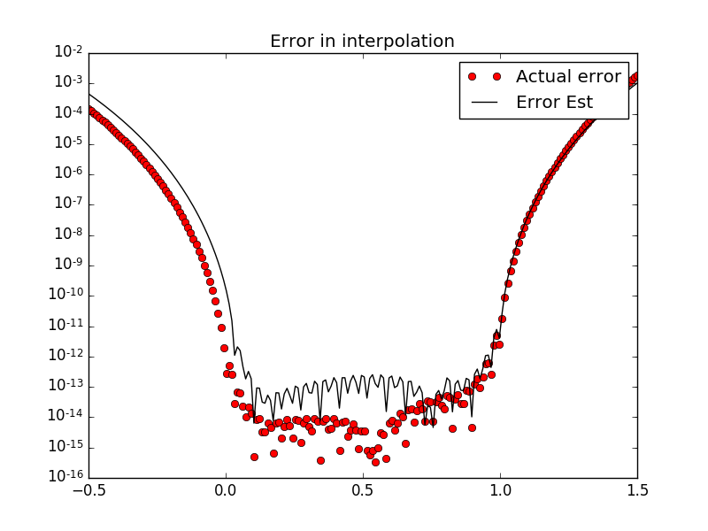
Order of polint = 10. Error has reduced across the full span.
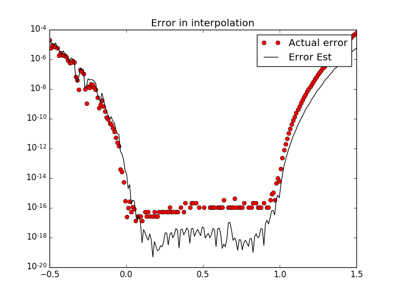
Order of polint=15. At this point, the error on the interval is tending to the machine epsilon value. The error outside the interval has improved thus far.

Order of polint=20. The error on the interval is approximately machine epsilon, but outside the interval it is worse than before.
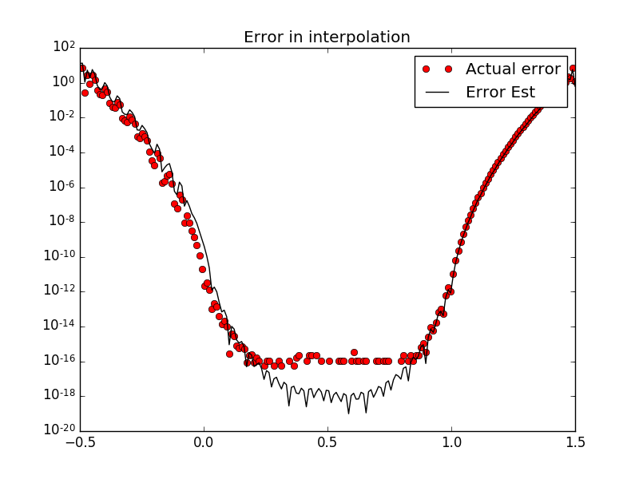
Order of polint=25. The error on the interval is approx machine epsilon, but outside the interval, it is even worse.
1.4 Varying Interpolation Order (n=3 to 20), max error
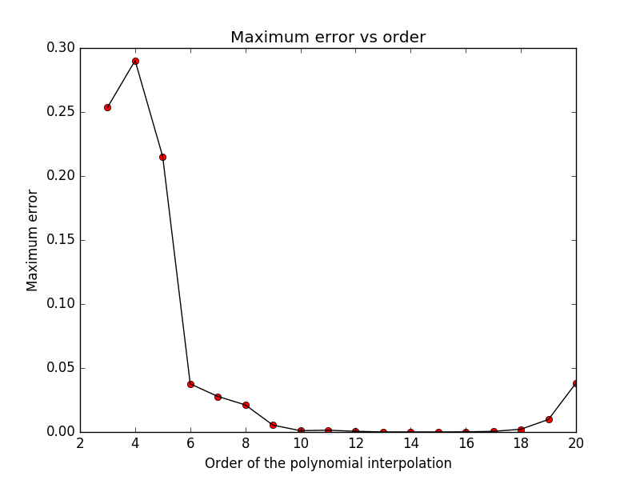
It can be seen that the maximum error falls quickly from 5 to 10, but then starts to rise beyond 15. If the graph is extended from 20 to 29, it can be seen to rise much faster, leaving these errors far behind. This shows that beyond an optimum order of polint, higher orders will actually increase the error. This observation validates Runge’s Phenomenon, which is the problem of oscillation that occurs at the edges of an interval when using polint with higher degree polynomials over a set of equispaced interpolation points.
1.5 Function Evaluation
f(x) = (sin(πx))/(√(1 − x2))
The above function, when defined on the real numbers ℝ, has a domain of (-1,1) and as x tends to -1 or 1, f(x) tends to zero. The function is continuous on the defined domain of (-1,1).
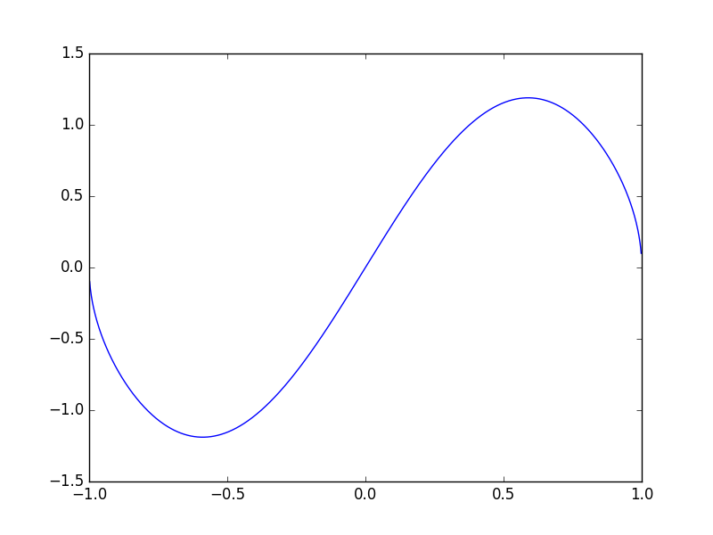
It is an odd function, symmetric about the origin. If the function is defined on the complex number space ℂ, then a removable discontinuity is formed at the points +1 and -1, since the values of LHL and RHL are equal to zero at these points, but the function value is ±infinity or undefined. The radius of convergence of a power series f centred on a point a is equal to the distance from a to the nearest point where f cannot be defined in a way that makes it holomorphic. Here, the function has singularities at +1 and -1, meaning that its power series about 0 has a radius of convergence of 1.
1.5.1 Interpolation at 1000 points for 6 digit accuracy
When attempting to obtain the value of the function to 6 digits of accuracy, it is necessary to have the maximum error of the order of 10 − 7. The order of interpolation required to achieve this can be checked by varying the degree passed to the polint function.
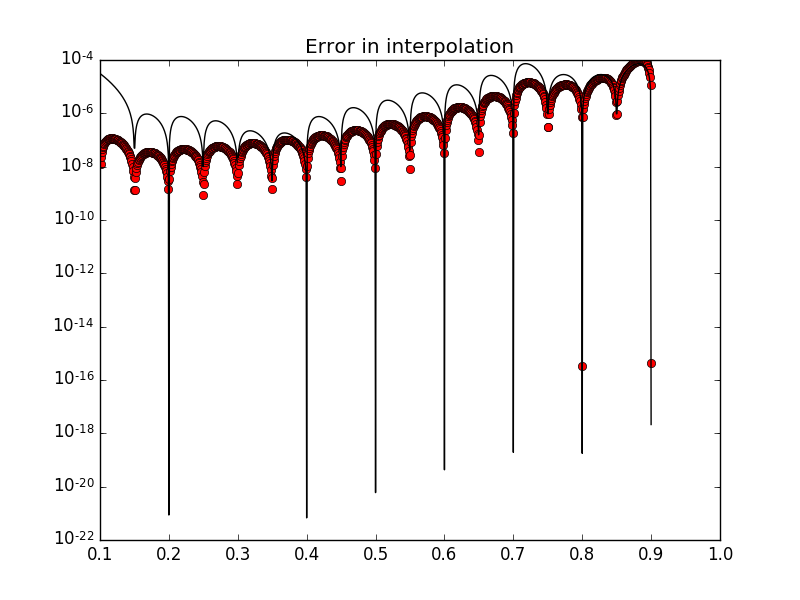
Order of interpolation=5, max error=9.64e-5
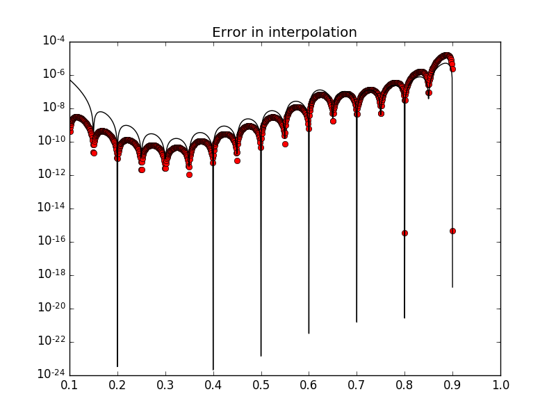
Order of interpolation=10, max error=1.62e-5
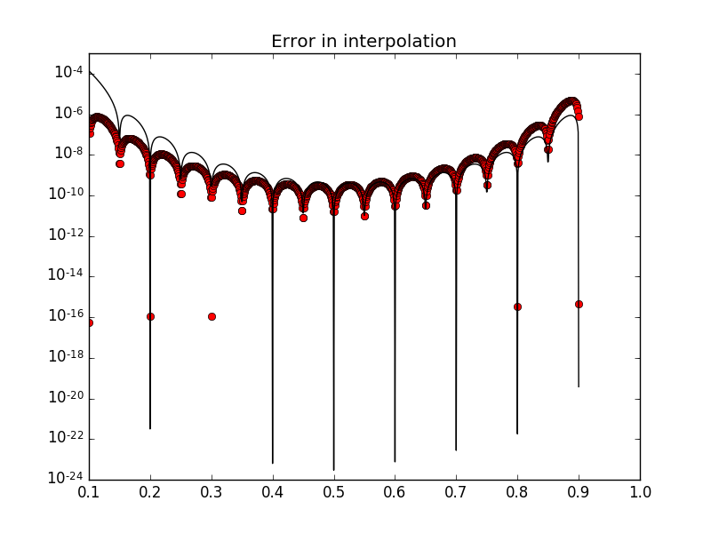
Order of interpolation=16, max error=4.8e-6
Thus, only when we use all the points, we are reducing the error to the order of nearly 10 − 7.